Operating Documentation
Direction 5193755-800, Rev# 8
BrightSpeed (Ltd. Access) Service Methods - Adv
Operating Documentation |
The circuit boards and disk drives for this system contain densely populated electronic components that are expensive and electrically sensitive. An electrostatic discharge (ESD) between 100 and 1000 V may damage a component. This is substantially less than the 3000 V discharge needed to feel any static. An ESD may cause an immediate failure, or it may weaken components to produce future, intermittent problems.
Always use the ESD strap pro-actively. Put circuit boards inside an anti-static bag or approved container before it is handled by a non-grounded person, moved from the grounded (ESD safe) area, or stored. Always place the board top side up on a flat surface when it is unmounted. Never handle the part outside its anti-static container unless the surrounding surfaces and you are grounded. Discharge the outside of the container before transferring the part.
Table 1: Actions that Reduce the Chances of ESD Damage
| PRO-ACTIVE ACTION | PROCEDURE |
|---|---|
| Turn power OFF | Turn power OFF before you touch, insert or remove parts containing electronic components. |
| Use wrist strap | Unless you are working near
a live 30 V or more circuit, ground your wrist to the specially designed ground
plug on the unit before you touch any parts. This includes connecting cables
to a drive, board, device, or bulkhead. While wearing your strap, test it with a specially designed meter. If it fails, it may be due to dry skin; apply lotion to your wrist and test again. Throw away any strap that is more than three months old. |
| Don’t let anything other than your grounded hand touch the electronic FRU | Do not let your sleeve, tie, pen, Styrofoam cup, plastic manual binder or clothing touch the circuit board or disk drive. Wearing cotton clothes and shoes with rubber-like soles may lessen how much ESD you generate walking across the room. Working in a room where relative humidity is under 20% can generate electrostatic voltages of 7000 to 35,000 Volts. However it only takes 100V to destroy an EEPROM. |
| Use proper handling | Handle circuit boards, disk
drives, or any electronic part as little as possible. Place them on an anti-static
workbench pad or in a grounded static dissipative bag. Do not stack components. Store circuit boards in an anti-static container.Pink, blue, or clear poly bags do NOT give protection from external sources of ESD. Instead, a grounded anti-static box may be used as a static free work surface. |
| Treat failed parts the same as good ones | Don’t add to the expense, complication and future un-reliability of a part by allowing it to be repeatedly zapped. Treat failed parts with proper ESD handling. |
| Use a special vacuum | Only use a vacuum of the type that prevents electrostatic buildup. |
| Use Ionizing Fan | The ionizing fan reduces the amount of charge built up in an area. The fan can be turned on and pointed in a general direction to keep an area from becoming statically charged. The fan can also be pointed at a single location to eliminate charge on that piece of equipment. Allow air to flow for at least six (6) seconds, for charge to dissipate. |
GEMS CT has evaluated current ESD process and recommends the following items be utilized to aid in the prevention of materials damage due to ESD events.
Anti-Static kit
Work Station Monitor (see Illustration 1)
Wrist Strap (see Illustration 1)
20 foot grounding cord
Anti-static mat (Field Supplied)
Aero Duster Air Spray System (see Illustration 5)
Aero Duster Spray (Field Supplied) (see Illustration 5)
High Output Ionizing Fan (see Illustration 6)
ESD Smock (see Illustration 4)
Safe Skin Nitrile Gloves (see Illustration 3)
Amax Contact and Circuit Board Cleaner (Field Supplied)
ESD Flex Boots (4 and 8 Slice Detectors) (see Illustration 2)
Elastomer Tweezers (4 and 8 Slice Detectors) (see Illustration 2)
Elastomer Removal Pick (4 and 8 Slice Detectors)
Spare Elastomers w/container (4 and 8 Slice Detectors)
Alcohol Pads 91% (4 and 8 Slice Detectors)
16 Slice ESD Boots (16 Slice Detectors)
Nitrile Gloves replace Finger Cots.
Finger cots can leave black particles on surfaces.
Incorrect dressing of finger cots results in skin oils contamination.
Aero Duster Spray System replaces Metal Tube used for Canned Air.
Can spray angle is critical. No Liquid Spray allowed. New Aero Duster Spray System provides user the flexibility of access to components while the Aero Duster can remains upright.
High Output Ionizing Fan - Applies physics laws to dissipate charge on insulating materials.
Illustration 1: ESD Workstation Monitor and Wrist Strap
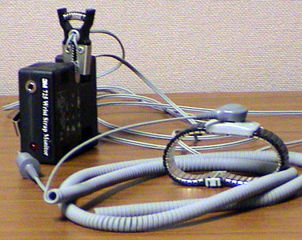
Monitor requires a 9 volt battery.
Monitor will “Beep” when you are not properly grounded.
Wrist strap must contact your skin. Do not place on top of clothing or Nitrile gloves.
Illustration 2: DAS/Detector Interface Tools
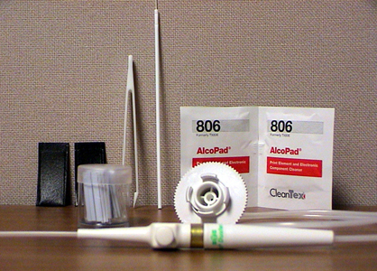
ESD Flex Boot Covers to protect detector from ESD damage
Alcohol wipes to clean flex leads prior to installation on the DAS/Detector Interface (DDIF).
Plastic tweezers and pick to remove and install elastomers.
Aero Duster attachment to remove debris from the DDIF assembly.
Illustration 3: ESD Nitrile Glove
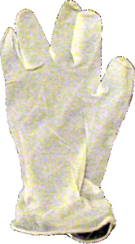
Use Nitrile gloves to prevent skin oil contamination. DO NOT use any other type of glove.
Illustration 4: Full Length Smock
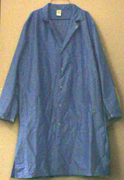
Use an ESD smock to prevent static discharge from your clothing. The wrist strap will not remove static charge from your clothing. The ESD smock will not remove charge from you clothing, it is a barrier to prevent ESD damage.
Illustration 5: Aero Duster and Spray System Attachment
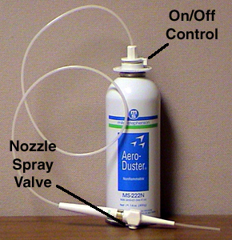
Remove the standard Aero Duster trigger.
Rotate Aero Duster Attachment to the OFF position.
Snap onto top of Aero Duster can. (Set attachment to OFF position before removal)
Illustration 6: Ionizing Fan
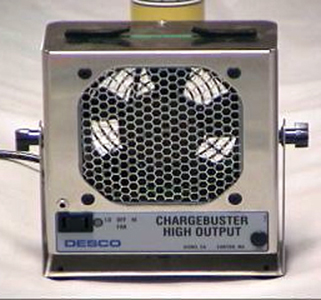
| When using aero duster to remove debris, do not allow liquid to contact any components. The evaporation of this liquid will generate static charge resulting in microphonic noise or ESD damage. | |
Illustration 7: Wrong Angles will Generate Liquid Spray
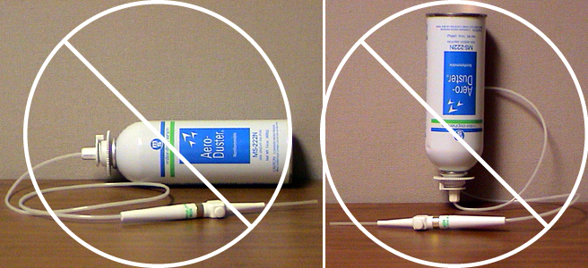
Do not use Aero Duster Spray as shown in Illustration 7. This will create a liquid stream which will charge the surface as it evaporates.
Always hold can upright as in Illustration 5 and clear the hose attachment by spraying away from any surface. Do this to ensure no liquid is discharged.
Liquid discharge can be seen as a mist at the output of the nozzle and a frosting on surfaces.
You want to HEAR the spray, NOT see it.
Illustration 8: Incorrect Aero Duster Nozzle Use
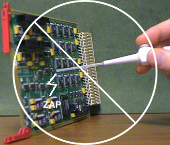
Illustration 9: Proper Aero Duster Nozzle Use
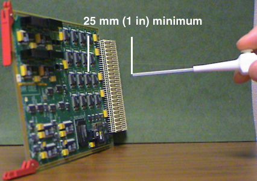
Never touch the tip of the nozzle to any surface (see Illustration 8) . The tip can be charged in excess of 10,000 volts. This can result in severe ESD damage and/or microphonics noise.
Charge on the nozzle tip will not be transferred by the flow of gaseous spray. Maintain at least 25 mm or 1 inch from any surface.
Always clear the nozzle, away from surfaces, of any potential liquid spray.
Illustration 10: Amax Cleaner Correct and Incorrect Usage
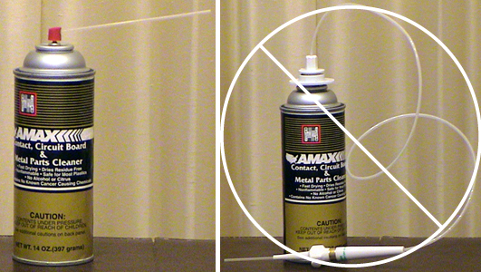
Amax Contact and Circuit board cleaner can be used to dissipate static charge.
Amax Contact Cleaner should not be used on the elastomers. The elastomers will absorb the liquid preventing proper evaporation. The result will be microphonics noise and artifacts.
Do not attach the Aero Duster attachment to any other chemicals.
Illustration 11: Preparing Your Work Area
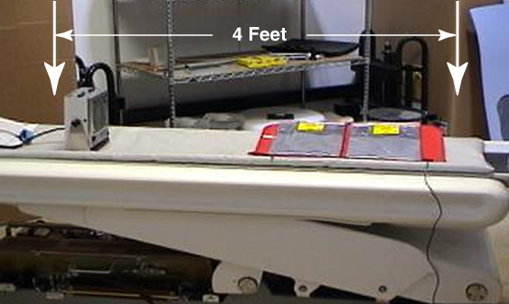
Place the static mat near the end of the cradle (see Illustration 11) . Connect the ground lead to the Threaded Rod for the Gantry Balance Trim Weights on either side of the DAS.
Place the Ionizing Fan on the cradle blowing across the static mat. Set the fan speed to high. The effective coverage of the fan is less than 6 feet.
Use the table service outlet to power the Ionizing Fan.
Illustration 12: Using the Ionizing Fan to Dissipate Charge at the DDIF
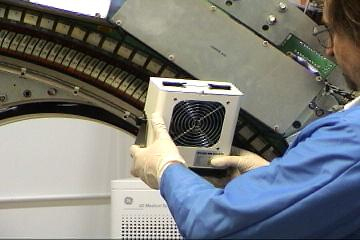
The Ionizing Fan is to be used to dissipate built up charges.
It takes about six seconds for the fan to dissipate any charge.
Slowly direct the air flow from the fan across the affected area. Make several passes over the area.
There are no visual or physical indications to show effectiveness in this process.
The fan will be most useful when dealing with the detector and DAS, but can be used on other components as well.